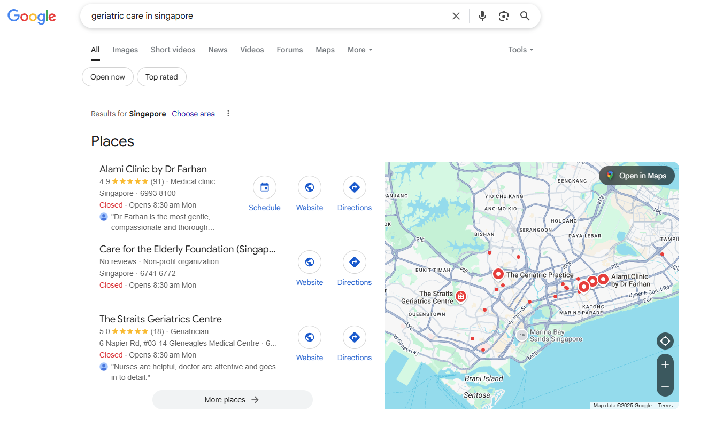

Page 1
Google ranking within 3 months
75%
Organic traffic increase quarter-over-quarter
516
Clicks (custom period)
25K
Impressions on Google
Lower
Bounce rate across top pages


Objective
Improve search visibility and drive organic leads for geriatric care services. The clinic needed to show up when people in Singapore searched for elderly care and neighborhood clinic options.
Strategy
- Focused on keywords like "geriatric care in singapore", "kembangan clinic" and more
- Conducted competitor analysis and positioned content to outrank hospitals and clinics
- Optimized on-page SEO (meta titles, internal links, headers) for each blog
- Fixed all technical issues from the website
- Created content clusters targeting FAQ-rich queries and national health schemes
Execution
The clinic was barely showing up on Google when we started. Most of the traffic was going to larger hospital websites and directory listings. I ran a full audit of the site to catch technical problems first, then moved into content. The blog strategy was built around questions real patients ask, things like eldercare subsidies, health screening options, and clinic services near specific neighborhoods. Each piece of content was structured with proper headers, internal links, and meta data. Within 3 months, the site started ranking on page 1 for several target keywords. Google Search Console showed steady growth in both clicks and impressions over the following quarter.
Want results like this?
Send me your account and I'll tell you what I'd change first. No cost, no pitch.
Get a free audit →